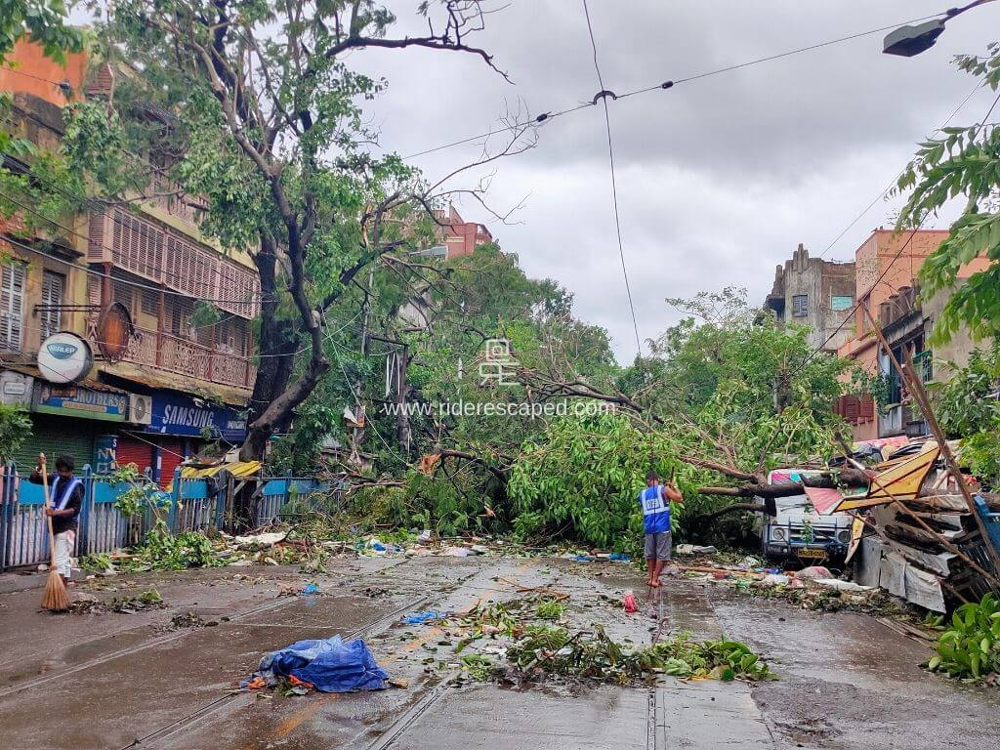
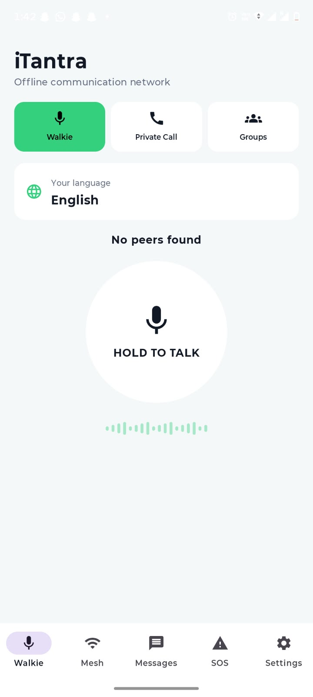
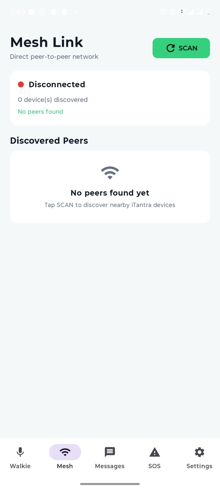
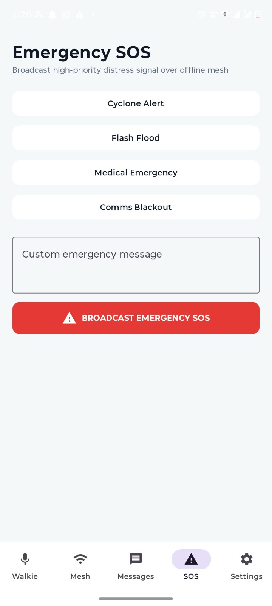
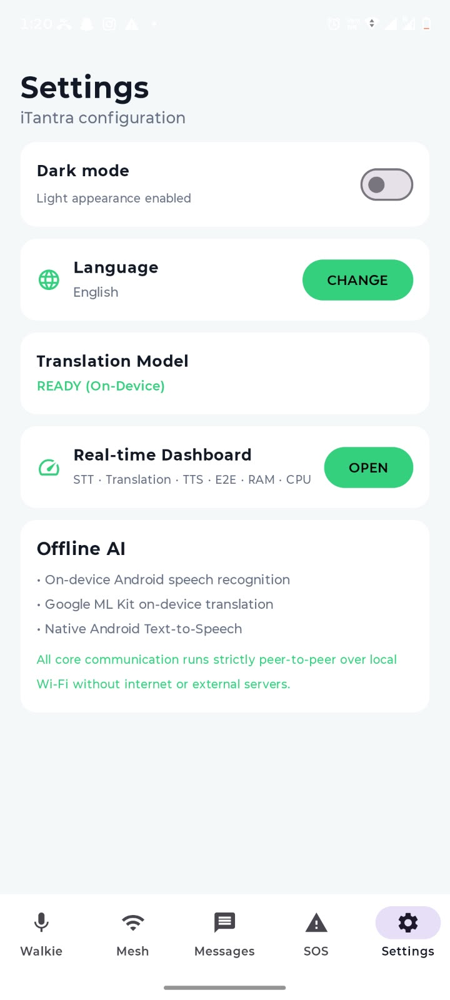

Communicate
Exchange voice and emergency messages through direct device-to-device communication.
A resilient communication platform designed for disaster response, emergency communication and low-connectivity environments.
iTantra is built around one simple idea: critical communication should continue even when conventional networks fail.
Exchange voice and emergency messages through direct device-to-device communication.
Support field teams with location, distance and rescue-oriented information.
Give responders tools that remain useful in disconnected and difficult environments.
From distress alerts to rescue coordination, iTantra brings essential communication tools together — even when there is no signal.
Broadcast distress with an emergency voice alert across the local mesh in supported Indian languages.
Hands-free team communication with peer discovery, voice activity detection and connection status.
A field-oriented interface for victim pinpointing, distance awareness and instant voice coordination.
Manage lightweight offline AI models with model status, restore controls and sensor diagnostics.
Wi-Fi Direct and BLE-based communication help devices stay connected without conventional network coverage.
During disasters, damaged infrastructure, power failures and disrupted connectivity can make communication and emergency coordination difficult when it matters most.
The July 2024 Wayanad landslides destroyed roads and key infrastructure while heavy rain continued, creating difficult conditions for rescue and emergency response.
SOURCE ↗
2020Cyclone Amphan caused widespread destruction in 2020. Communities reported loss of connectivity, electricity and road access after the cyclone, making access to essential services harder.
SOURCE ↗ GLOBAL
GLOBAL
UNDRR identifies damaged communication infrastructure, power disruption and network congestion as major causes of telecommunications failure during disasters.
UNDRR SOURCE ↗iTantra is designed to make emergency and low-bandwidth voice communication more accessible across India's diverse linguistic communities.
Experience the iTantra prototype and explore how communication can continue beyond conventional networks.
DOWNLOAD PROTOTYPE APP →A focused mobile interface designed for communication, emergency alerts and off-grid operation when conventional connectivity is unavailable.

Central interface for starting communication and managing the active connection.

Connect directly with nearby devices.

Send an instant distress alert.

Manage language and communication options.
Six people, one mission — building communication technology that keeps working when the network doesn't.

Team Lead
LinkedIn ↗
Backend & Integration
LinkedIn ↗
Android Development
LinkedIn ↗
STT / TTS & AI
LinkedIn ↗
UI / UX & Design
LinkedIn ↗
Communication & Testing
LinkedIn ↗